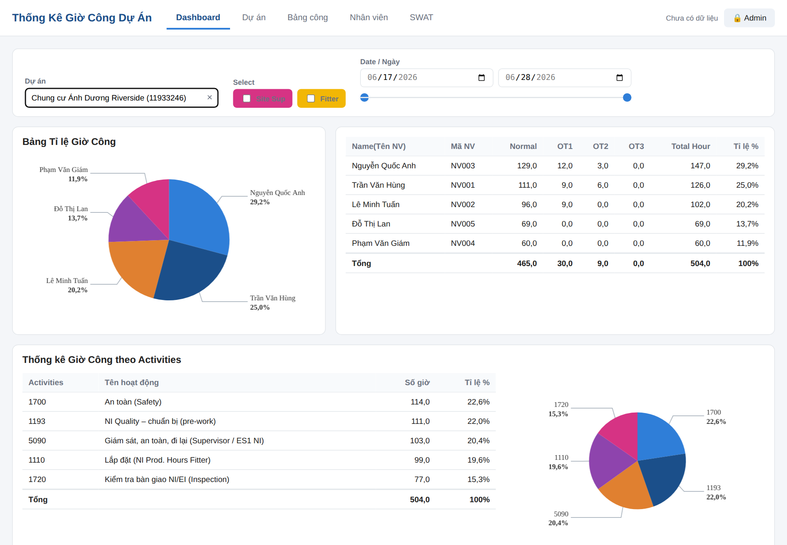
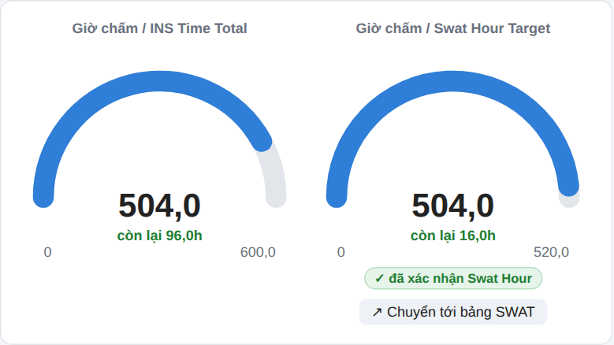
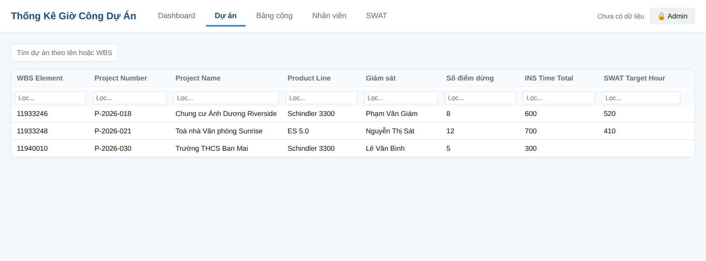
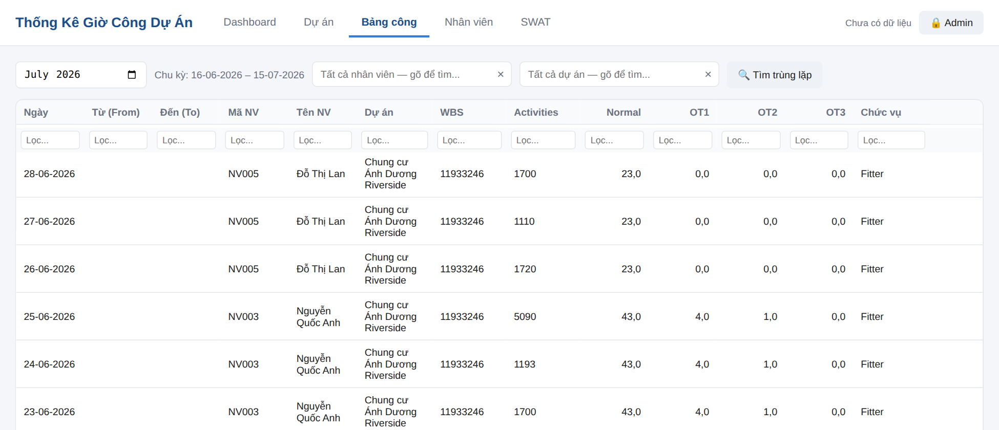
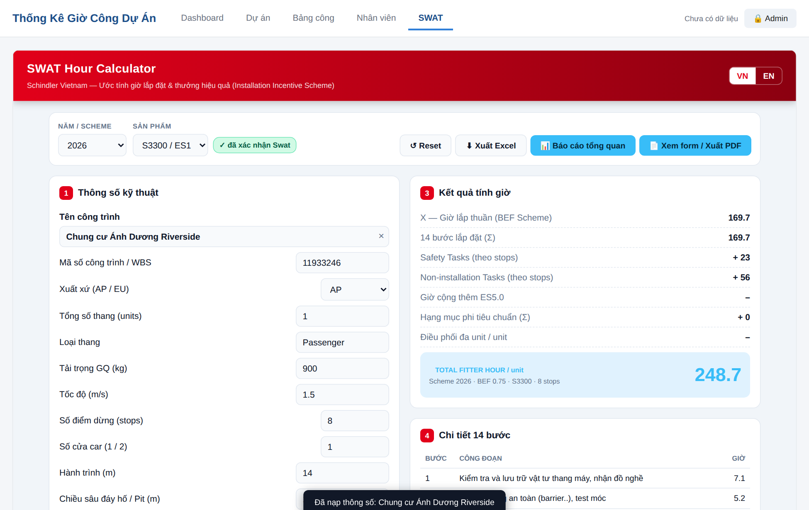
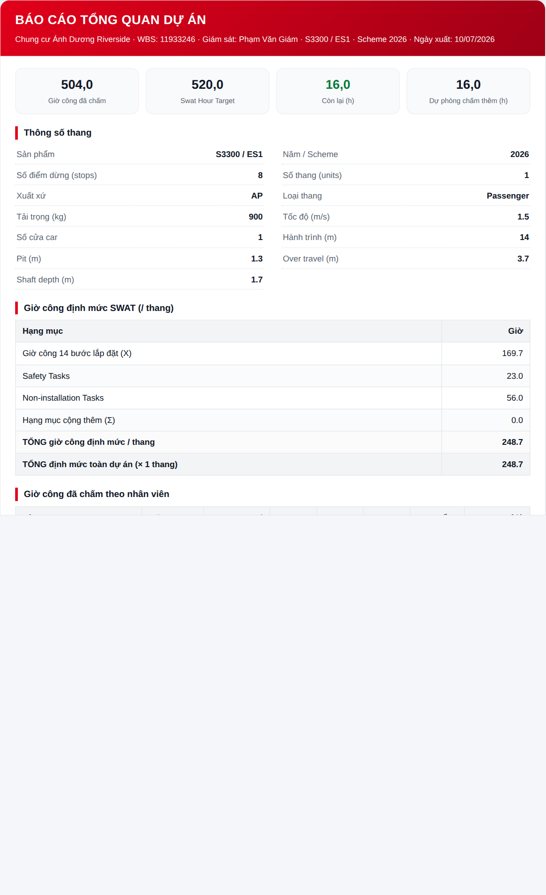

Phần mềm theo dõi giờ công lắp đặt & công cụ SWAT Hour
Dành cho người dùng · Phiên bản Phase 1
Tài liệu tra cứu & xem báo cáo — không bao gồm thao tác quản trị.
1
Giới thiệu
Thống Kê Giờ Công Dự Án giúp bạn xem nhanh tình hình giờ công của từng dự án lắp đặt thang máy: ai làm bao nhiêu giờ, so với định mức còn lại bao nhiêu, và tra cứu giờ công & tiền thưởng theo công cụ SWAT.
Chạy trực tiếp trên trình duyệt (Chrome, Edge, Safari) — không cần cài đặt.
Mở bằng đường link phần mềm được cấp; dùng được trên máy tính và điện thoại.
Bạn xem & xuất báo cáo; việc nhập/sửa dữ liệu do người quản trị thực hiện.
Mẹo: Nếu giao diện có vẻ cũ sau khi phần mềm được cập nhật, hãy nhấn Ctrl + F5 (máy Mac: Cmd + Shift + R) một lần để tải lại bản mới.
2
Màn hình chính & các tab
Thanh trên cùng có 5 tab. Bấm để chuyển qua lại:
Dashboard — tổng quan giờ côngDự án — danh sách dự ánBảng công — chi tiết chấm côngNhân viên — danh bạSWAT — bộ tính giờ & thưởng
Bên phải là trạng thái dữ liệu và nút 🔒 Admin (chỉ dùng cho người quản trị). Người dùng thường không cần đăng nhập.
3
Xem Dashboard
Đây là nơi xem tổng quan giờ công của một dự án.

Màn hình Dashboard sau khi chọn dự án
Tại ô Dự án, gõ tên hoặc mã WBS rồi chọn dự án cần xem.
Dùng Select (Site Sup / Fitter) để lọc theo vai trò, hoặc chọn khoảng ngày để xem theo thời gian.
Xem biểu đồ tròn tỉ lệ giờ công theo người, bảng nhân viên (Normal/OT1/OT2/OT3/Tổng) và thống kê theo hoạt động (Activities).
4
Đọc đồng hồ "còn lại / overrun"
Hai đồng hồ cho biết dự án đã dùng bao nhiêu giờ so với định mức.

Trái: so với INS Time Total · Phải: so với Swat Hour Target
Giờ chấm / INS Time Total So với chỉ tiêu giờ của dự án.
Giờ chấm / Swat Hour Target Chỉ hiện khi dự án đã được xác nhận SWAT.
còn lại Xh (chữ xanh): dự án vẫn còn quỹ giờ.
overrun Xh (chữ đỏ): dự án đã vượt định mức.
Nút "↗ Chuyển tới bảng SWAT": bấm để nhảy sang tab SWAT và tự chọn sẵn dự án đang xem.
5
Tra cứu Dự án · Bảng công · Nhân viên
Ba tab dạng bảng để tra cứu nhanh. Mỗi cột đều có ô lọc riêng.

Tab Dự án — WBS, tên, sản phẩm, giám sát, thông số và SWAT Target Hour

Tab Bảng công — chọn tháng (chu kỳ 16 tháng trước → 15 tháng này), lọc theo nhân viên/dự án
Dự án: ô tìm theo tên hoặc WBS; xem cột SWAT Target Hour ở cuối bảng.
Bảng công: chọn tháng để xem đúng chu kỳ; bấm 🔍 Tìm trùng lặp để soát các dòng nghi trùng.
Nhân viên: tra mã NV, họ tên, chức danh, quản lý trực tiếp.
6
Công cụ SWAT — tra cứu giờ & thưởng
Tab SWAT cho biết giờ công định mức và dự kiến tiền thưởng của một dự án.

Chọn dự án → xem ngay Kết quả tính giờ (mục 3)
Chọn Tên công trình ở mục 1 (gõ để tìm, không cần gõ dấu).
Mục 3 – Kết quả tính giờ hiện tổng giờ định mức / thang; mục 4 là chi tiết 14 bước.
Kéo xuống mục 5 – Scorecard để xem tiêu chí chất lượng và tiền thưởng Fitter / Site-sup; mục 6 chia thưởng theo từng người.
Huy hiệu "✓ đã xác nhận Swat" cạnh ô Sản phẩm cho biết dự án đã được quản trị chốt số liệu SWAT. Việc Ghi Swat Target là thao tác của quản trị.
7
Xuất báo cáo
Trong công cụ SWAT có sẵn các nút xuất — người dùng thường đều dùng được:
⬇ Xuất Excel File .xlsx gồm 2 sheet: giờ lắp đặt & scorecard.
📄 Xem form / Xuất PDF Xem form giống Excel gốc rồi In / Lưu PDF.
📊 Báo cáo tổng quan (PDF) — báo cáo đẹp, dễ đọc trên laptop & điện thoại (chỉ hiện với dự án đã xác nhận SWAT):

Thông tin dự án · thông số thang · giờ định mức · giờ đã chấm theo người (còn lại/overrun) · dự kiến chi thưởng
Chọn dự án trong tab SWAT.
Bấm 📊 Báo cáo tổng quan.
Xem trên màn hình, rồi bấm 🖨 In / Lưu PDF để lưu file.
8
Câu hỏi thường gặp
Tôi không thấy nút Thêm / Sửa / Xoá?
Đó là chức năng của người quản trị. Người dùng thường chỉ xem và xuất báo cáo.
Đồng hồ "Swat Hour Target" không hiện?
Dự án đó chưa được quản trị Ghi Swat Target. Đồng hồ INS Time Total vẫn hiển thị bình thường.
Nút "Báo cáo tổng quan" không xuất hiện?
Chỉ áp dụng cho dự án đã được xác nhận SWAT. Hãy báo quản trị nếu cần.
Giao diện chưa cập nhật sau khi phần mềm đổi mới?
Nhấn Ctrl + F5 (Cmd + Shift + R) một lần để tải lại.
Số liệu tôi thấy có được lưu lên mạng không?
Dữ liệu nằm trong trình duyệt của bạn; bản chung được quản trị đồng bộ qua Google Drive.
Thống Kê Giờ Công Dự Án · Phase 1 · Tài liệu dành cho người dùng. Chi tiết đầy đủ (bao gồm thao tác quản trị) xem tại docs/HUONG-DAN-SU-DUNG.md.